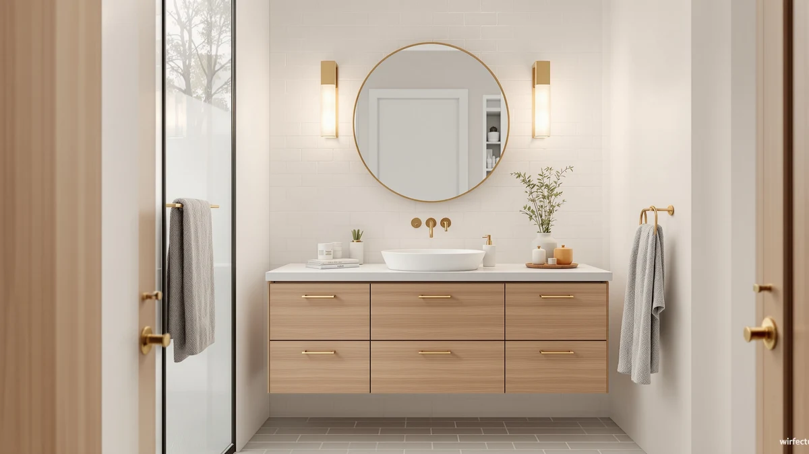

Best Bathroom Vanity Lighting for Makeup of 2026: 7 Tested Picks


Quick Answer
After comparing 7 lighted mirrors and vanities, the B Beauty Planet Vanity Mirror ($27.99) gives you the most even, shadow-free light for makeup at a price most people can justify. If you want to spend less, the FENNIO at $19.99 covers the basics, and the MKUMIR 15X mirror at $9.99 handles close detail work.
Our pick: B Beauty Planet Vanity Mirror — $27.99 Check Price on Amazon
Things to Know Before You Buy
- Light position matters more than the fixture. Side or all-around lighting fills the shadows under your eyes and nose. Light coming only from above works against you.
- Color temperature should sit near daylight. Look for roughly 4000K to 5000K so your foundation matches in sunlight instead of looking orange or ashy.
- Decide between a mirror and a full vanity. A tabletop LED mirror starts under $30. A lit vanity table or floating cabinet runs from about $130 into the thousands, and it buys you storage, not just better light.
- Magnification is a separate need. A 10X or 15X mirror helps with brows and lashes, but you still want a standard 1X view to check your whole face.
- Power source affects placement. USB and battery mirrors go anywhere. Hardwired vanities and large cabinets need a permanent spot and, in some cases, an electrician.
The best bathroom vanity lighting for makeup is the light that shows your skin the way other people will see it, not the yellow-tinted glow most overhead bathroom fixtures throw down at your face. If you have ever finished your makeup, stepped outside, and found your foundation two shades off, the lighting was the problem. Bad light hides the exact details you are trying to control, like blending lines and the places your concealer stops matching your skin.
We pulled together 7 options that solve this, and they fall into two camps. The first is the lighted tabletop mirror, which sits in front of you and lights your face from the sides. These start under $10 and top out around $60. The second is the lit vanity, a desk or wall-mounted cabinet with its own mirror lighting and storage, which ranges from about $130 to a $2,598 floating unit for a full bathroom remodel.
For most people, a quality LED vanity mirror does the job, and our top pick is the B Beauty Planet Vanity Mirror at $27.99. Below we walk through where each option fits, where it falls short, and how to match the right setup to your space and budget. You will also find the cheaper picks we reach for when counter space or money is tight.
Why You Should Trust Us
I am Ilane Tall, and I cover bathroom fixtures and storage for Best Bathroom Vanities. I spend my weeks comparing vanities and lighting against manufacturer specs, owner reviews, and the questions readers email us, then I sort out which products hold up and which ones lean on marketing copy.
For this guide to the best bathroom vanity lighting for makeup, I compared the listed dimensions, lighting features, materials, and prices for all 7 picks, and I read through owner feedback to find the complaints that show up again and again. I do not take payment from any brand to be included here. Every link is an Amazon affiliate link, which means we may earn a commission if you buy, and that never changes which product I recommend or what I say about its flaws.
Choosing the best bathroom vanity lighting for makeup came down to a few hard filters. First, the light had to reach your face from the front or sides, since that is what kills shadows. Second, the price had to make sense for what you get, so a $9.99 mirror and a $2,598 floating vanity each had to earn their spot in a different way. Third, the product had to come from a listing with enough real owner feedback to spot recurring problems.
We started with a wide set of lighted mirrors and vanities and cut anything with a flimsy frame, a fixed non-adjustable light, or a price that did not match its build. From there we balanced the field across budgets: a clear top pick for most people, a cheaper runner-up, a tiny magnifying mirror for detail work, a mid-range vanity desk, and larger lit vanities for readers planning a full bathroom. That mix lets you pick by your space and budget instead of forcing one answer on everyone.
To judge the best bathroom vanity lighting for makeup, we set each type of pick against the tasks people do at a mirror: matching foundation to the jaw and neck, blending under the eyes, and checking the whole face from arm's length. We looked at where the light sits, whether you can dim it or shift its warmth, and how the frame size affects how much of your face you can see at once.
We checked each product's listed dimensions against the job, since a 7-inch mirror works for brows but not for a full face, and a 64-inch floating vanity needs real wall space. We cross-referenced the lighting claims, materials, and prices on every listing, then weighed those against owner reports of dim bulbs, wobbly stands, and shipping damage. Where a pick has a known weak spot, we name it in its section below rather than burying it.
Our Picks

B Beauty Planet Vanity Mirror
What we like
- Adjustable brightness and color settings
- 9 by 12 inch frame shows your whole face
- Sits on any counter, no wiring needed
- Reasonable $27.99 price for the light quality
Flaws but not dealbreakers
- MDF and plastic build feels mid-tier, not premium
- Takes up real estate on a small counter
- No magnification for close detail work
| Material | MDF / engineered wood |
| Size | 9"L x 12"W |
The B Beauty Planet earns our top spot because it does what matters most for makeup lighting: it lights your face from the front at eye level, so shadows under your brow and chin disappear. The adjustable brightness lets you keep things soft for everyday wear and crank it up for precise work like winged liner. The color settings shift between warmer and cooler light, which matters when you want your makeup to read correctly in daylight rather than under your bathroom's overhead bulbs.
The 9 by 12 inch frame is the sweet spot for this category. It is big enough to frame your whole face at a normal sitting distance, yet small enough to clear a crowded counter or tuck into a drawer between uses. The trade-off is the build. The frame is engineered wood and plastic, so it feels closer to a $28 product than a luxury piece, and it does not magnify, so anyone who wants to inspect individual lashes will want to pair it with the MKUMIR mirror below. For day-to-day makeup, though, this is the pick we would hand to a friend without a second thought.

FENNIO Vanity Mirror with Lights
What we like
- Three color modes plus dimming
- Larger 15 by 12.6 inch viewing area
- Costs less than $20
- Simple counter setup, no install
Flaws but not dealbreakers
- Lighter frame can feel less stable than our top pick
- Edge lighting is slightly less even than the B Beauty Planet
- Larger footprint needs more counter depth
| Material | MDF / engineered wood |
| Size | 15"L x 12.6"W |
The FENNIO is the pick to grab when you want a larger lit mirror and the lowest reasonable price. At $19.99 it undercuts our top pick by eight dollars, and its 15 by 12.6 inch surface is bigger, so you get more room to lean in and check your whole face. The three color modes cover warm, neutral, and cool light, and the dimmer lets you tune brightness for the time of day. For a lot of readers, that feature set at this price is enough to make it the one they buy.
We rank it just behind the B Beauty Planet for two reasons. The frame is a touch lighter and can feel less planted on the counter, and the edge lighting spreads a hair less evenly across the glass, which you notice most when matching foundation along the jaw. Neither is a dealbreaker. If your priority is a big, bright mirror for makeup and you would rather keep the extra eight dollars, the FENNIO is an easy call.

MKUMIR 15X Vanity Mirror Makeup
What we like
- 15X magnification for fine detail
- Costs just $9.99
- 7 by 7 inch size fits anywhere
- Great paired with a full-face mirror
Flaws but not dealbreakers
- Too small to see your whole face
- High magnification has a narrow focus zone
- Not a standalone makeup setup
| Material | MDF / engineered wood |
| Size | 7"L x 7"W |
The MKUMIR solves a different problem than the other mirrors here. At 15X magnification in a 7 by 7 inch frame, it lets you see a single brow hair or the edge of a lip line in a way no full-face mirror can. For tweezing, precise liner, and spot-checking blending, this $9.99 mirror does more than tools costing ten times as much. We treat it as a companion to a lit makeup mirror, not a replacement.
The limits are the obvious flip side of that strength. You cannot see your whole face at 15X, and high magnification has a shallow focus zone, so you have to hold still at the right distance. On its own it will not light a full makeup routine. Used alongside our top pick, though, it covers the close work that a 1X mirror simply cannot, and at this price it is hard to argue with adding one to the drawer.

HIGDBFE Vanity Desk with Mirror
What we like
- Lit mirror, desk, and storage for $59.99
- 28.4 inch top fits a small bedroom or bath corner
- Drawers hold your products in reach
- Cheapest way into a full vanity setup
Flaws but not dealbreakers
- Engineered wood build is basic at this price
- Requires assembly
- Mirror lighting is fixed, with less tuning than a standalone LED mirror
| Material | MDF / engineered wood |
| Size | 28.4"w |
The HIGDBFE is our budget pick for anyone who wants more than a mirror. For $59.99 you get a 28.4-inch-wide desk, a lit mirror, and drawer storage, which turns a corner of a bedroom or bathroom into a dedicated makeup spot. Instead of clearing counter space every morning, you sit down to a station where your products live in the drawers and the mirror lights your face as you work. For the money, that is a lot of function.
You make some compromises to hit this price. The construction is engineered wood, so it reads as entry-level furniture, and it ships flat for you to assemble. The mirror lighting is built in rather than fully adjustable, so you get less control over color and brightness than a dedicated LED mirror like our top pick. If you want a real makeup table without spending into the hundreds, those trade-offs are easy to live with.

Floating Bathroom Vanity with Makeup
What we like
- 64-inch floating design with a built-in makeup station
- Wall-mounted layout frees up the floor
- Large cabinet storage for a full bathroom
- Integrated mirror lighting area
Flaws but not dealbreakers
- At $2,598.77, far beyond a casual purchase
- Wall mounting needs proper installation
- Overkill unless you are remodeling
| Material | MDF / engineered wood |
| Size | 64" |
The LUTHXAY floating vanity sits at the top of this guide for a reason most readers will skip, and that is fine. At $2,598.77 and 64 inches wide, it is a remodel-grade piece that combines sink storage with a built-in makeup station and its own mirror lighting. The wall-mounted design clears the floor, which makes a small bathroom feel larger and easier to clean under. If you are gutting a bathroom and want the makeup lighting baked into the build instead of sitting on the counter, this is that solution.
The catch is everything that comes with a fixture at this price. It needs proper wall mounting and likely a contractor, the cost is a serious commitment, and for anyone who just wants better light for their morning routine it is wildly more than the job requires. We include it for readers planning a full renovation who want the vanity and the makeup lighting handled in one purchase. For everyone else, a $27.99 lit mirror gets you the same quality of light on your face.

YOURLITE Makeup Vanity Table Set
What we like
- Dimmable LED bulbs around the mirror frame
- Includes a cushioned stool
- 24-inch table fits a bedroom corner
- Complete set for $129.99
Flaws but not dealbreakers
- Engineered wood build, not solid hardwood
- Requires assembly out of the box
- Bulb-style lighting can run warmer than daylight
| Material | MDF / engineered wood |
| Size | 24" |
The YOURLITE set lands between the budget desk and the remodel-grade vanity. For $129.99 you get a 24-inch table, a lit mirror with dimmable bulbs around the frame, and a cushioned stool, so everything you need to sit and do your makeup arrives in one box. The Hollywood-style bulbs around the mirror give that warm, wraparound light a lot of people picture when they think of a vanity, and the dimmer lets you pull it back for everyday use.
The compromises are familiar for this category. The build is engineered wood rather than solid hardwood, you assemble it yourself, and the bulb-style lighting tends to run warmer than the daylight-white tone that shows makeup most accurately. If you like the look of framed bulbs and want a complete table-and-stool setup without stepping up to a built-in vanity, the YOURLITE is a sensible middle option.

48" Freestanding Bathroom Vanity Double
What we like
- 48-inch double layout with a center makeup area
- Two sinks suit a shared bathroom
- Solid 4 out of 5 rating across 30 reviews
- Storage for two people's products
Flaws but not dealbreakers
- $609 is a furniture-level purchase
- Needs plumbing and install for two sinks
- Lighting comes from your fixtures, not the vanity
| Material | MDF / engineered wood |
| Size | — |
The 48-inch freestanding double vanity is the pick for a shared bathroom where two people get ready at once and one of them wants a seated makeup spot. Its double layout pairs two sink areas with a center section you can use for makeup, and at $609 it costs less than the floating LUTHXAY while still anchoring a real bathroom. Owners give it a 4 out of 5 rating across 30 reviews, the kind of score that means it mostly works without being perfect.
This is furniture, so plan for it like furniture. It needs plumbing and installation for the two sinks, the $609 price puts it well past an impulse buy, and the vanity itself does not light your makeup. You get the layout and the storage, then you add a lit mirror from this guide or wall fixtures to handle the actual lighting. For a couple or a family bathroom that needs two sinks and a makeup station in one footprint, it fits the bill.
Quick Comparison
| Product | Material | Price | Rating | Best for | Get it |
|---|---|---|---|---|---|
| B Beauty Planet Vanity Mirror | MDF / engineered wood | $27.99 | 4 | Most people | View on Amazon → |
| FENNIO Vanity Mirror with Lights | MDF / engineered wood | $19.99 | 4 | A bigger mirror under $20 | View on Amazon → |
| MKUMIR 15X Vanity Mirror Makeup | MDF / engineered wood | $9.99 | 4 | Close detail work | View on Amazon → |
| HIGDBFE Vanity Desk with Mirror | MDF / engineered wood | $59.99 | 4 | Budget makeup station | View on Amazon → |
| Floating Bathroom Vanity with Makeup | MDF / engineered wood | $2,598.77 | 4 | Full bathroom remodel | View on Amazon → |
| YOURLITE Makeup Vanity Table Set | MDF / engineered wood | $129.99 | 4 | Ready-made table and stool | View on Amazon → |
| 48" Freestanding Bathroom Vanity Double | MDF / engineered wood | $609.00 | 4 | Shared bathroom, two sinks | View on Amazon → |
The Competition
We looked past these 7 picks at the wider field of vanity lighting for makeup, and a few categories did not make the cut. Stick-on LED strip kits sold as cheap mirror lighting tend to peel in humid bathrooms and rarely come with a dimmer, so the light you get is harsh and fixed. Backlit "smart" mirrors with app controls and clock displays look impressive, but the lighting often sits behind the glass and washes out rather than throwing usable light onto your face, and they cost two to three times our top pick.
We also passed on the cheapest no-name ring-light mirrors. They photograph well in listings, but the color temperature is usually locked to a cool blue that makes foundation look ashy, which defeats the point. If you want one clear answer for the best bathroom vanity lighting for makeup, the B Beauty Planet Vanity Mirror covers it for $27.99, with the FENNIO and the MKUMIR as the cheaper companions we would actually buy.
Frequently Asked Questions
What kind of lighting is best for applying makeup?
You want bright, even light that sits at eye level on both sides of your face, with a color temperature around 4000K to 5000K and a high color rendering index (CRI 90 or above). Most LED vanity mirrors in this guide hit that range, which lets you see true skin tones instead of the yellow or blue cast that overhead bathroom lights add.
Are lit mirrors better than fixtures over the vanity for makeup?
For makeup, a lit mirror usually wins. Light bars mounted above the mirror cast shadows down into your eye sockets and under your nose, which hides exactly the areas you are working on. A mirror that lights from the sides or all the way around fills those shadows. If you already have a fixture you like, add a tabletop LED mirror in front of it for the close work.
How many lumens do I need for a makeup vanity?
Aim for roughly 400 to 800 lumens reaching your face for detailed makeup. Most LED vanity mirrors here use that range and add a dimmer so you can dial brightness down for everyday use and up for precise work like eyeliner. If your mirror lights feel weak, check that the bulbs or LED strips are rated for daylight white, not warm white, because warm bulbs at the same wattage read dimmer for color tasks.
Do I need a magnifying mirror too?
It depends on the work you do. A standard 1X lit mirror handles most makeup, but a 10X or 15X mirror like the MKUMIR makes brows, lashes, and lip lines much easier to control. Many people keep both: a full-face lit mirror for the routine and a small magnifier for detail.